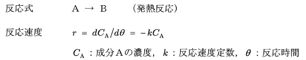
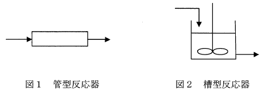

平成25年度 問26 有機化学及び燃料
A→Bの反応は、発熱的に進行する液相均一反応であり、反応速度は成分Ａの濃度の一次として、次式のように表される。

このとき、図1、図2に示す反応器に関する次の記述のうち、最も不適切なものはどれか。
①
管型反応器では、成分Aの濃度は、入口から出口に向かって減少する。
②
管型反応器では、入口付近の除熱量を大きくしないと均一な温度とならない。
③
槽型反応器では、反応器内の成分の濃度は出口濃度と同じである。
④
槽型反応器では、混合が十分であれば、槽内の温度を均一に保つことができる。
⑤
槽型反応器では、槽内の成分Aの濃度を均一にできるので、同じ反応率を得るには、管型反応器より小さな容積でよい。

正答
⑤ 槽型反応器では、槽内の成分Aの濃度を均一にできるので、同じ反応率を得るには、管型反応器より小さな容積でよい。
槽型反応器（連続槽型反応器、CSTR）では槽内の成分Aの濃度を均一に保つことができます。これは撹拌によって反応器内の混合が十分に行われるためです。同じ反応率を得るのに必要な容積に関しては、一般的に管型反応器（プラグフロー反応器、PFR）の方が槽型反応器よりも小さくて済みます。
今回の発熱反応は、反応速度r＝-kCAであり成分Aの濃度が効きます。
槽型反応器は濃度や温度などを均一な条件にして反応できるメリットがあります。槽内の濃度が均一なため、反応速度も一定です。
管管型反応器は入口から出口に向かって濃度が変化し、それに伴って反応速度も変化します。反応物の濃度勾配が維持されるため、より効率的に反応が進行します。